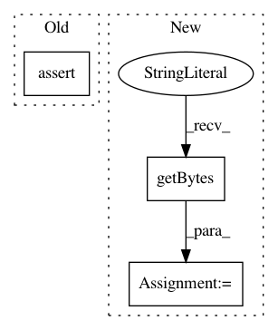

e3d577b5595af3e1c9a05d3be84dbdf1a7c4aa20,nilearn/datasets/tests/test_atlas.py,,test_fetch_atlas_aal,#Any#Any#,379
Before Change
assert isinstance(dataset.maps, str)
assert isinstance(dataset.labels, list)
assert isinstance(dataset.indices, list)
assert len(tst.mock_url_request.urls) == 1
with pytest.raises(ValueError,
match="The version of AAL requested "FLS33""
):
After Change
def test_fetch_atlas_aal(tmp_path, request_mocker):
metadata = (b"<?xml version="1.0" encoding="us-ascii"?>"
b"<metadata></metadata>")
archive_root = Path("aal", "atlas")
aal_data = dict_to_archive(
{archive_root / "AAL.xml": metadata, archive_root / "AAL.nii": ""})
request_mocker.url_mapping["*AAL_files*"] = aal_data
dataset = atlas.fetch_atlas_aal(data_dir=str(tmp_path), verbose=0)
assert isinstance(dataset.maps, str)
In pattern: SUPERPATTERN
Frequency: 3
Non-data size: 3
Instances
Project Name: nilearn/nilearn
Commit Name: e3d577b5595af3e1c9a05d3be84dbdf1a7c4aa20
Time: 2020-07-29
Author: jerome@dockes.org
File Name: nilearn/datasets/tests/test_atlas.py
Class Name:
Method Name: test_fetch_atlas_aal
Project Name: pantsbuild/pants
Commit Name: 783feee3639953f11654cdd9284d6b8b0d6b5a26
Time: 2016-07-23
Author: john.sirois@gmail.com
File Name: tests/python/pants_test/binaries/test_binary_util.py
Class Name: BinaryUtilTest
Method Name: test_support_url_multi
Project Name: GoogleCloudPlatform/python-docs-samples
Commit Name: 172ee1d15de08df39fd41ab685cca82fcc2c3145
Time: 2018-09-28
Author: d.sanche14@gmail.com
File Name: kms/api-client/asymmetric_test.py
Class Name: TestKMSSamples
Method Name: test_rsa_sign_verify